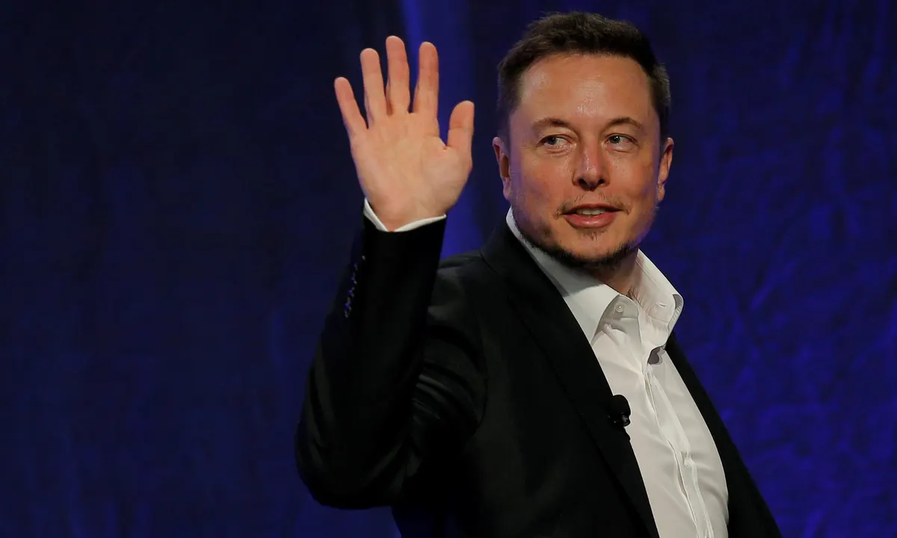

ELON MUSK !!
"There have to be reasons that you get up in the morning and you want to live. Why do you want to live? What's the point? What inspires you? What do you love about the future? If the future does not include being out there among the stars and being a multi-planet species, I find that incredibly depressing."


Elon Musk is the charismatic chief executive of electric car maker Tesla and rocket manufacturer SpaceX, and has made a deal to buy Twitter.
Born and raised in South Africa, Musk spent time in Canada before moving to the U.S.
Educated at the University of Pennsylvania in physics, Musk started getting his feet wet as a serial tech entrepreneur with early successes like Zip2 and X.com, which merged with a company that became PayPal.As lead designer at SpaceX, Elon oversees the development of rockets and spacecraft for missions to Earth orbit and ultimately to other planets. In 2008, the SpaceX Falcon 1 was the first privately developed liquid fuel rocket to reach orbit, and SpaceX made further history in 2017 by re-flying both a Falcon 9 rocket and Dragon spacecraft for the first time. Soon after, Falcon Heavy, the most powerful operational rocket in the world by a factor of two, completed its first flight in 2018. In 2019, SpaceX’s crew-capable version of the Dragon spacecraft completed its first demonstration mission, and the company will fly NASA astronauts to the International Space Station for the first time in 2020.